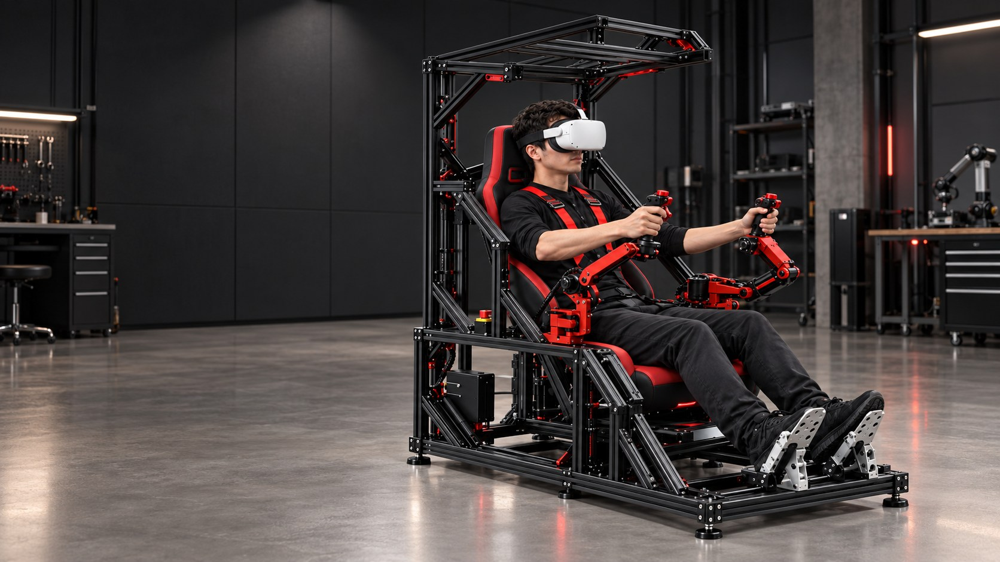
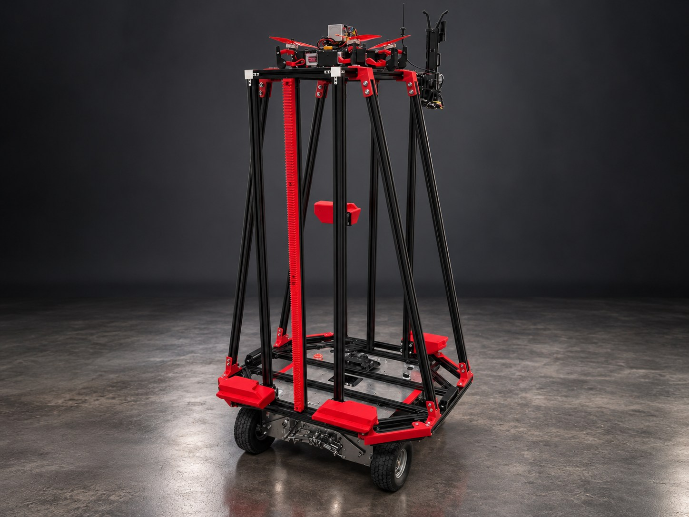
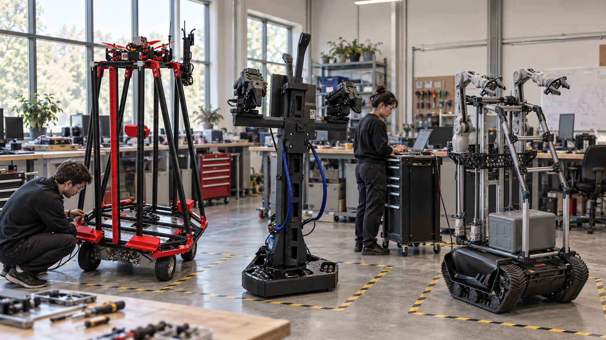
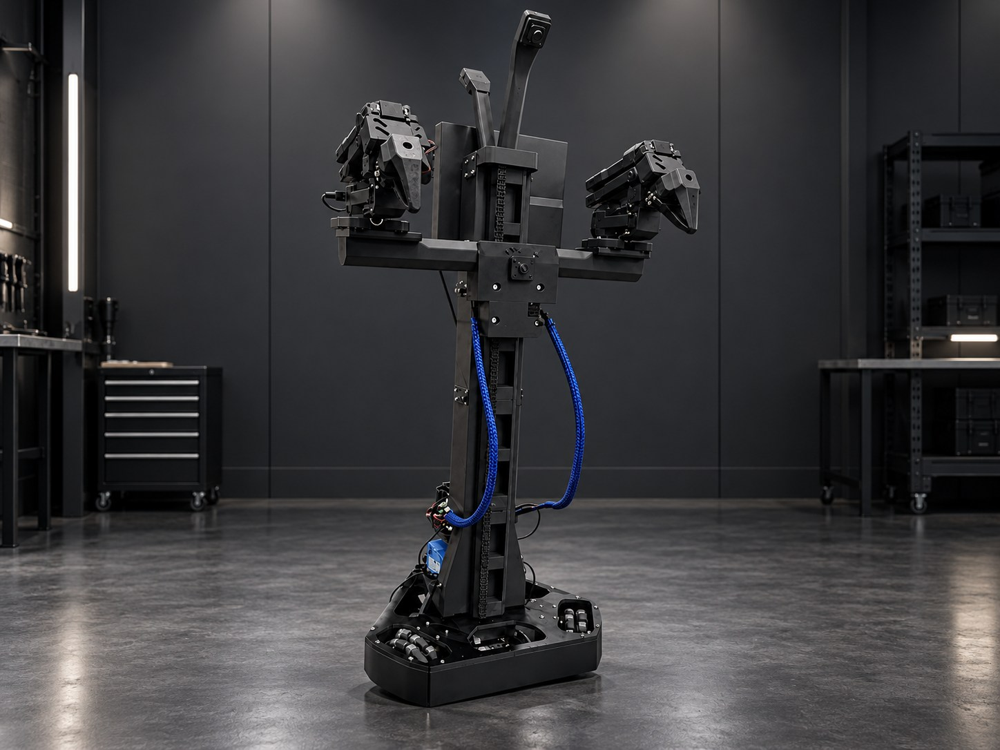
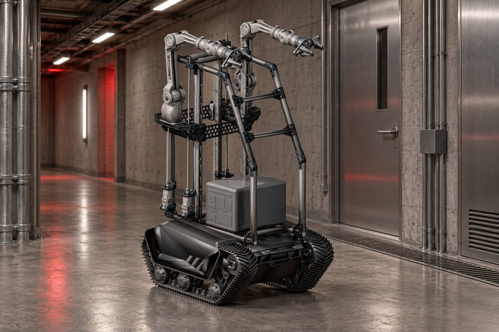
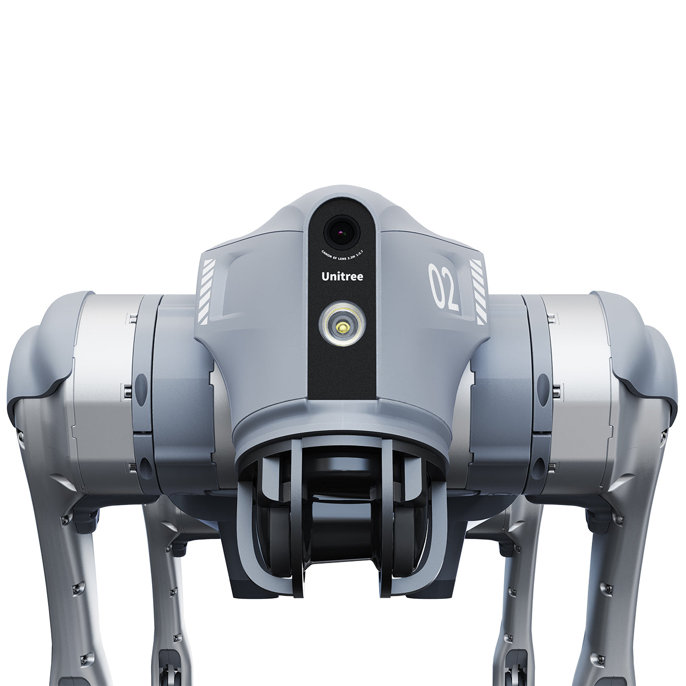
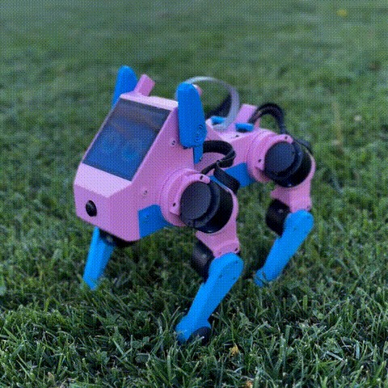
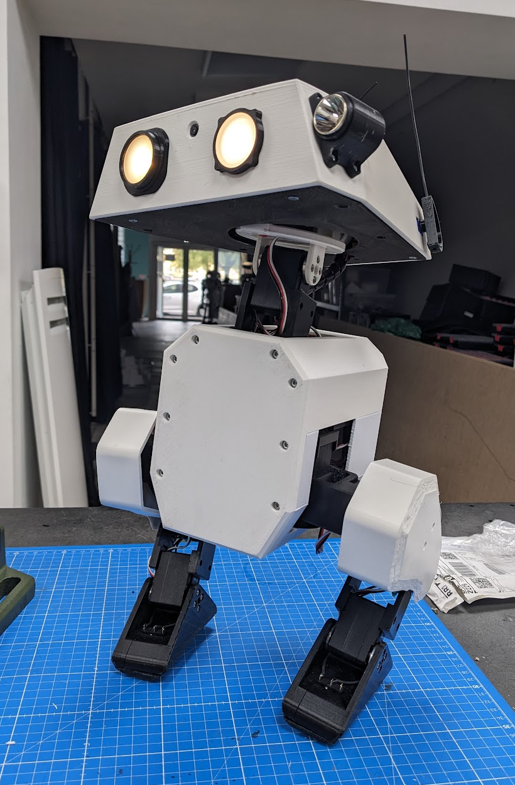

01
See
Live video and state make the machine and its surroundings legible.
Inspection prototype Human-led robotics
ARGUS is a supervised robotic-inspection layer for places fixed cameras cannot fully cover. One operator monitors routine patrols, takes over when uncertainty appears and keeps a time-stamped evidence trail.

01 Wider patrol coverage
02 Visible control authority
03 Human takeover by design
04 Auditable records
01 / THE SYSTEM
ARGUS separates common intent from robot-specific execution. Video, telemetry, commands and stop behavior return through one clear loop.

Live video and state make the machine and its surroundings legible.
The operator selects a task, robot and level of control.
Each adapter translates intent within platform limits.
Telemetry and observable outcomes close the loop.
02 / CONNECTED FLEET
Generated concept imagery is illustrative. Integration labels reflect the repository—not a marketing promise.

Software bridge updated
The student bridge now covers the mobile base, four arm buses, paired lifts and USB camera capture. Supervised hardware validation remains outstanding.

Open-source platform
Compact dual-arm mobile robot with a lift, designed for embodied AI and LeRobot workflows.
Project GitHub ↗
Concept evidence
Tracked inspection concept with an authored animation. No verified fabrication CAD is published here.
View concept ↓
dimOS integration
Compact quadruped with an open dimOS path for mapping, navigation and agentic control.
dimOS GitHub ↗
Open-source platform
Open-source quadruped for locomotion, robotics education and embodied AI research.
Project GitHub ↗
Open-source platform
Open-source biped for walking, control and expressive embodied interaction.
Project GitHub ↗03 / PILOT HYPOTHESIS
A six-to-eight-week paid pilot should answer a commercial question, not stage a spectacle: does supervised robotic inspection improve coverage and verification enough to justify its cost?
Prototype boundary ARGUS supports observation, control and records. It does not certify compliance, replace registered inspections or remove the need for physical emergency procedures.
Route frequency, walking time, staffing and reporting time before deployment.
Blind spots reached, suspected defects surfaced and false alerts requiring review.
Time to verify an alert, intervention rate and conditions that still require attendance.
Reliable route completion, operator workload and records useful to managers or auditors.
OPEN COLLABORATION
Contribute inside one adapter or the shared cockpit. Document what was tested, what remains unknown and how a person can stop the machine.